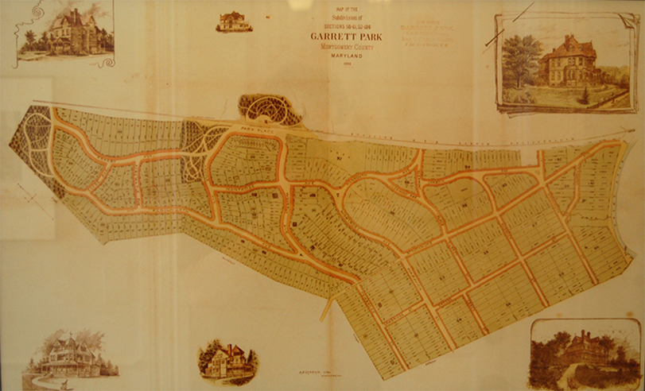

Garrett Park (GP) resident Todd Del Priore has created a Historic Map of Garrett Park, Maryland. The motivation for this project came from a love of maps, the inspiration came from the GP Map framed in Penn Place outside Black Market's interior door:

This project involved downloading GP maps in TIFF format from:
http://plato.mdarchives.state.md.us/
Portions of these TIFF files were rotated, sized and assembled into one Adobe Photoshop file. The white background in this file was selected and deleted leaving only the black portions on a transparent background. Each element (e.g. builder notes, titles, compass, etc.) were put in separate layers within the Photoshop file.
The next process involved creating the color backgrounds to represent the lots, shoulders, roads, and parks. The Photoshop map layer was placed in an Adobe Illustrator file. Illustrator was used to painstakingly trace the lots into a layer, then the shoulders into a layer, then the roads into a layer and lastly the parks into a layer. Each of these layers were filled with a color closely relating the GP Map in Penn Place. These layers were then copied and pasted as layers into the Photoshop file. The transparency of each layer was set to 50% and lined up under the map layer. The bottom "parchment paper" was created in Photoshop and set as the bottom layer. The other elements were placed around the map. Below is the resulting map:
Please direct questions about the map and purchasing copies to: todd@delpriore.com
Standard Sizes:
8" x 8"
11" x 14"
16" x 20"
18" x 24"
24" x 36"
12" x 36"
30" x 40"